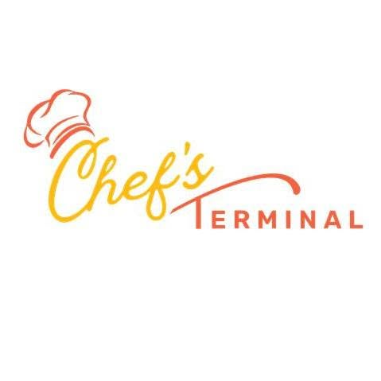
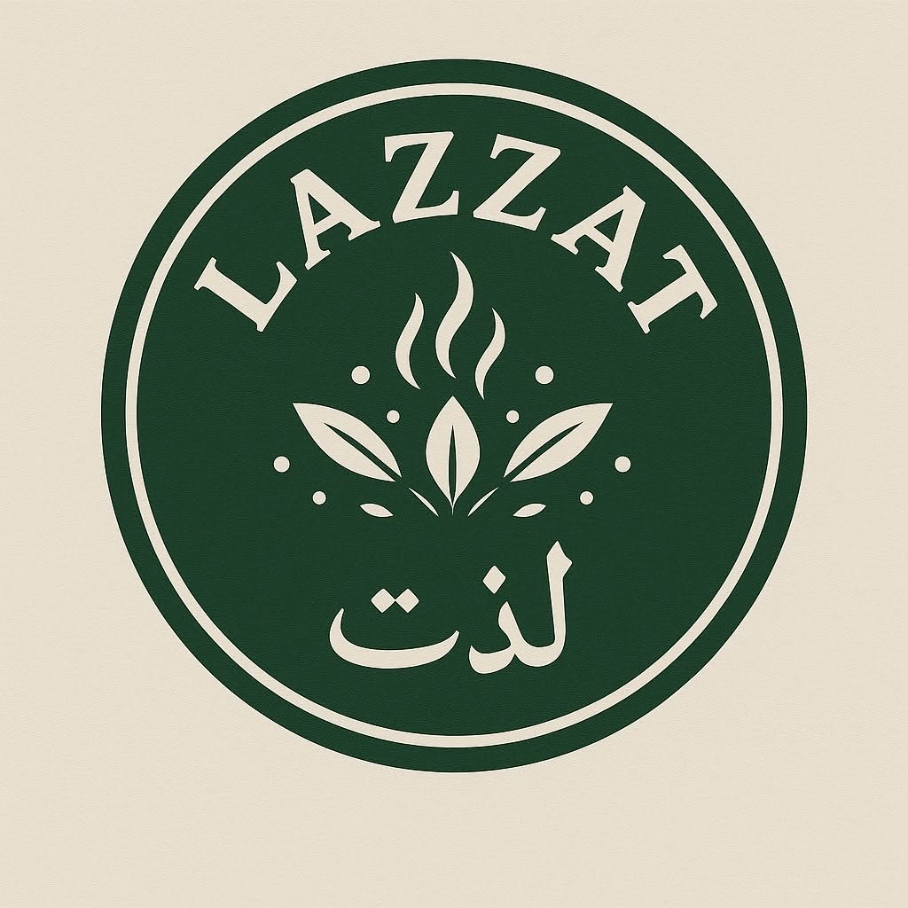

Four distinctive destinations — each created, owned and operated by Artius. Currently running and growing.
A vibrant lifestyle and entertainment arcade where dining, leisure and culture meet under one roof.
Bali Arcade reimagines the social destination — a place to eat, gather and unwind across an afternoon or a whole evening. From the layout to the lighting, every corner is designed to keep people lingering a little longer.
Bali Arcade — main floor, wide shot
Dining or café zone
Games / leisure corner

Signature dish, close-up
Open kitchen in action
A chef-driven food destination where open kitchens and bold flavours take centre stage.
Chef's Terminal puts the kitchen in the spotlight — a hub built around the energy of cooking, where guests watch craft happen in real time. It's food as theatre, grounded in serious technique and seriously good ingredients.
Authentic Pakistani flavours, reimagined — a modern restaurant celebrating tradition on every plate.
Lazzat is a love letter to Pakistani cuisine, served in a setting that feels both contemporary and warm. Time-honoured recipes meet modern presentation, creating a table that feels familiar and fresh at once.

Best-selling Pakistani dishes
Dining room ambience
AVW Rosalida — dining room, evening light
Fine-dining table setting
Signature plating
An elegant fine-dining and lifestyle venue designed for unhurried, memorable evenings.
AVW Rosalida is our most refined expression of hospitality — a space where considered design, attentive service and a thoughtful menu come together for occasions worth dressing up for.
We bring the same craft and operational rigour to partner brands through management and consultancy.